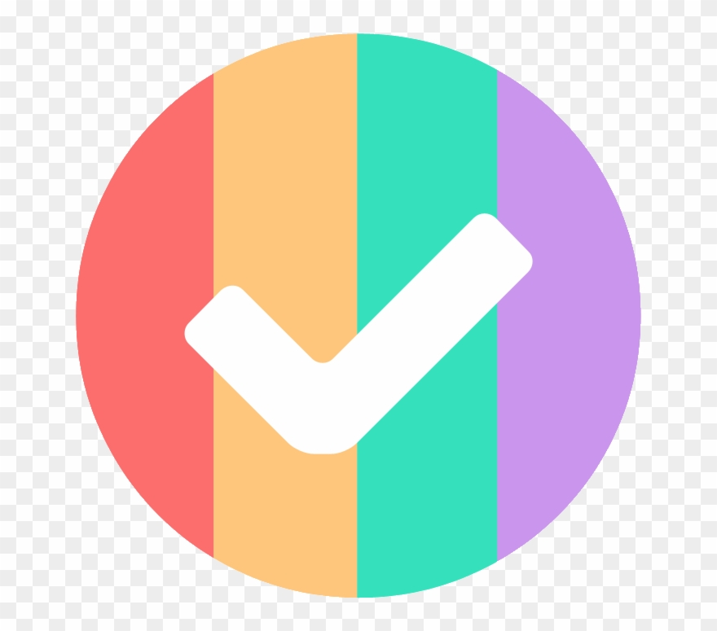

<!-- Navigation -->
<nav class="navbar navbar-expand-lg navbar-dark bg-dark static-top">
    <div class="container">
        <a class="navbar-brand" routerLink="#">
            <b> ToDo APP</b>
        </a>
        <button class="navbar-toggler" type="button" data-toggle="collapse" data-target="#navbarResponsive"
            aria-controls="navbarResponsive" aria-expanded="false" aria-label="Toggle navigation">
            <span class="navbar-toggler-icon"></span>
        </button> 
        <div class="collapse navbar-collapse" id="navbarResponsive">
            <ul class="navbar-nav ml-auto">
                <li class="nav-item active">
                    <a class="nav-link" routerLink="/todoList" routerLinkActive="active">Todos Liste
                    </a>
                </li>
                <li class="nav-item active">
                    <a class="nav-link" routerLink="/todoForm" routerLinkActive="active">Neue Todo</a>
                </li>
            </ul>
        </div>
    </div>
</nav>